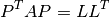
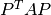
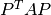
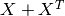
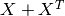

Terminology¶
The following notation and terminology is used in this documentation.
A sparsity pattern of a square matrix is a set of positions (i,j) where the matrix is zero. A sparsity pattern is symmetric if (j,i) is in the sparsity pattern whenever (i,j) is in the sparsity pattern. Note that the entries of the matrix outside the sparsity pattern are allowed to be zero. Those entries are called numerical zeros, as opposed to the structural zeros in the sparsity pattern.
A symmetric sparsity pattern is called chordal if every positive definite
matrix  with the sparsity pattern can be factored as
with the sparsity pattern can be factored as

where  is a permutation matrix, and
is a permutation matrix, and  is a lower
triangular matrix with the same sparsity pattern as the lower triangular
part of . In other words, there exists a symmetric
reordering of the matrix that has a Cholesky factorization with zero
fill-in. Such a reordering is called a perfect elimination ordering for
the sparsity pattern.
is a lower
triangular matrix with the same sparsity pattern as the lower triangular
part of . In other words, there exists a symmetric
reordering of the matrix that has a Cholesky factorization with zero
fill-in. Such a reordering is called a perfect elimination ordering for
the sparsity pattern.
For simplicity, we will refer to a symmetric matrix with a chordal sparsity
pattern as a chordal symmetric matrix. This terminology is somewhat
ambiguous, because there can be many sparsity patterns associated with the
same matrix. When we use the term it will be clear from the context
which sparsity pattern is used. A nonsymmetric matrix  is chordal
if the sparsity pattern of  is chordal.
is chordal
if the sparsity pattern of  is chordal.
The projection of a matrix on a sparsity pattern S is defined as

A sparsity pattern R is an embedding of the sparsity pattern S if R is a subset of S.